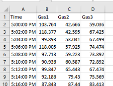

Reading Input and Writing Output
Engineers often use tabular data that can be stored in spreadsheets like Excel, i.e. in columns and rows. Consequently, this page focuses on reading and writing tabular data. Furthermore, this page only considers the most common file formats, with these endings:
.xls and .xlsx
.csv
The best Python package for reading, writing, and analyzing these file formats is pandas which stores data in a
DataFrame. If you are not familiar with this data structure, please read Data Analysis before proceeding.
Additionally, I recommend reading 10 Minutes to pandas.
Import matplotlib, numpy, and pandas like this:
>>> import matplotlib.pyplot as plt
>>> import numpy as np
>>> import pandas as pd
If a file is not located in the same folder as the Python script, then the path must be provided. One way to get the path is to navigate to the folder in File Explorer and click on the path bar.

Copy and paste the path into your script, surround it with quotes (single or double), and put the letter r in front of it
(the letter r stands for “raw string” and is needed to make sure the backslashes do not do unwanted things, like n newline).
Any file can be referenced by combining the folder path with the file name–also in quotes, with a backslash, and r before the first quote.
>>> # Example of how to access a specific folder and files.
>>> input_folder_path = r'C:\Users\mlowry\OneDrive - University of Idaho\Courses\CE215\Data_Files'
...
>>> my_data_file = input_folder_path + r'\ExampleData.xlsx' # Note the backslash to separate the path and file name.
Note
This method will work on a Windows computer. Paths are written differently on Linux and Mac computers. Mac computers do not have drives and use forward slash instead of backward slash. So on a Mac the folder path would be:
>>> # Path on a Mac computer.
>>> input_folder_path = r'/Users/mlowry/OneDrive - University of Idaho/Courses/CE215/Data_Files'
Acutally, the best approach, because it will work on any operating system, is to use from pathlib import Path.
Excel files
Consider for example an Excel file with data for the temperatures of three gases taken every 2 minutes:
The code below reads in the file as a DataFrame, performs some analysis to create a new DataFrame, and then writes the new DataFrame as a new Excel file. It is good Python style to put all folder paths together at the top of the script, one line below the imports.
>>> import matplotlib.pyplot as plt
>>> import numpy as np
>>> import pandas as pd
...
>>> # Folder paths
>>> input_folder_path = r'C:\Users\mlowry\OneDrive - University of Idaho\Courses\CE215\Data_Files'
>>> output_folder_path = r'C:\Users\mlowry\OneDrive - University of Idaho\Courses\CE215\Part2_Python\Output'
...
>>> # Read Input
>>> my_data_file = input_folder_path + r'\Temperature_Data.xlsx'
>>> df = pd.read_excel(my_data_file, sheet_name="Sheet1") # Creates a DataFrame called "df".
...
>>> # Do analysis or create plots, etc.
>>> df["Combined"] = df['Gas1'] + df['Gas2']
...
>>> # Write output.
>>> output_file = output_folder_path + r'\Output.xlsx'
>>> df.to_excel(output_file, sheet_name='Results')
...
csv files
A Commas Separated Values (csv) file is simple and popular way to store tabular data.
The example below reads data about wage rates for all public employees in the City of Seattle. The data is located here: https://data.seattle.gov/City-Business/City-of-Seattle-Wage-Data/2khk-5ukd
There are various ways to access the data. Click Export (i.e. download) to see a few options. Download the data to your computer and move it to a desired folder.
The code below reads in the file as a DataFrame, performs some analysis to create a new DataFrame, and then writes the new DataFrame as a new csv file (the output could be any format, including Excel). It is good Python style to put all folder paths together at the top of the script, one line below the imports.
>>> import matplotlib.pyplot as plt
>>> import numpy as np
>>> import pandas as pd
...
>>> input_folder_path = r'C:\Users\mlowry\OneDrive - University of Idaho\Courses\CE215\Data_Files'
>>> output_folder_path = r'C:\Users\mlowry\OneDrive - University of Idaho\Courses\CE215\Part2_Python\Output'
...
>>> # This is the csv file in a folder on your computer.
>>> csv_file = input_folder_path + r'\City_of_Seattle_Wage_Data.csv' # Note the backslash to separate the path and file name.
...
>>> # Example reading a csv file to create a DataFrame called "df".
>>> df = pd.read_csv(csv_file)
...
>>> # Example data analysis that creates a new DataFrame called "d".
>>> df['Annual'] = df['Hourly Rate '] * 52 * 40 # Note the data has an odd space after Hourly Rate.
>>> df2 = df[['Last Name', 'Hourly Rate ', 'Annual']]
...
>>> # Example writing a DataFrame to a csv file.
>>> output_file = output_folder_path + r'\Output.csv'
>>> df2.to_csv(output_file)
...
Tip
A better way to acces data from the internet is to use the API (application programming interface), especially if you plan to repeatedly access the dataset. When you click on API you will see the url to the API Endpoint, often in json or csv format. Copy the url and read it in as a DataFrame. Sometimes the data provider limits API access and/or requires you to register to get a username and password (or token). For example, the City of Seattle will only allow the first 1000 rows to be accessed without a token, however, you can register for free to get a token that allows you to access more data. This process allows the data provider to monitor the traffic to their servers where the data is stored and perhaps regulate excessive use. For example, Google provides an API to Google Map data, like business location data. Their API allows people to create interesting apps. Google allows a certain number of “pings” to their database servers for free (like a few thousand per day), but then starts to charge the app creater if the number of pings per day is super high.
HTML tables
Pandas can read tables from webpages.
>>> import pandas as pd
...
>>> url = r'https://en.wikipedia.org/wiki/List_of_mountains_by_elevation'
>>> tables = pd.read_html(url)
...
>>> df1 = tables[0]
>>> df2 = tables[1]